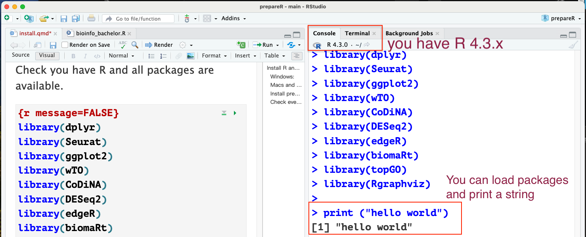

# Step1. Install packages from CRAN
install.packages(c("dplyr", "Seurat", "ggplot2", "wTO", "CoDiNA"))
# Step2. Check if you have BiocManager
if (!requireNamespace("BiocManager", quietly = TRUE))
install.packages("BiocManager")
BiocManager::install(version = "3.18")
# Step3. Install packages from Bioconductor
BiocManager::install(c("DESeq2", "edgeR", "biomaRt", "topGO", "Rgraphviz"))Install R and RStudio
If you want to explore by yourself, here are the manuals to install R and RStudio.
In brief:
Windows:
Download the current R version for windows here: R download link (R for windows) and follow the instructions.
Download RStudio (2023.12.0 version) here: RStudio download link (windows) and follow the instructions.
Macs and Linux:
Download the current R version for windows here: R for macs | R for Ubuntu(Linux) and follow the instructions.
Download RStudio (2023.12.0 version) here: RStudio for Macs ,RStudio for Ubuntu and follow the instructions.
after installing R and RStudio, you can test it by opening the RStudio software and type a simple code in the console like:
Next step is to install all pre-requested packages for the course.
Install pre-requested packages
Please type the below command in your console one by one:
Check everything is settle
Check you have R and all packages are available. Try execute the code below in your console in RStudio.
library(dplyr)
library(Seurat)
library(ggplot2)
library(wTO)
library(CoDiNA)
library(DESeq2)
library(edgeR)
library(biomaRt)
library(topGO)
library(Rgraphviz)
print ("hello world")[1] "hello world"You should get something like this without error:
